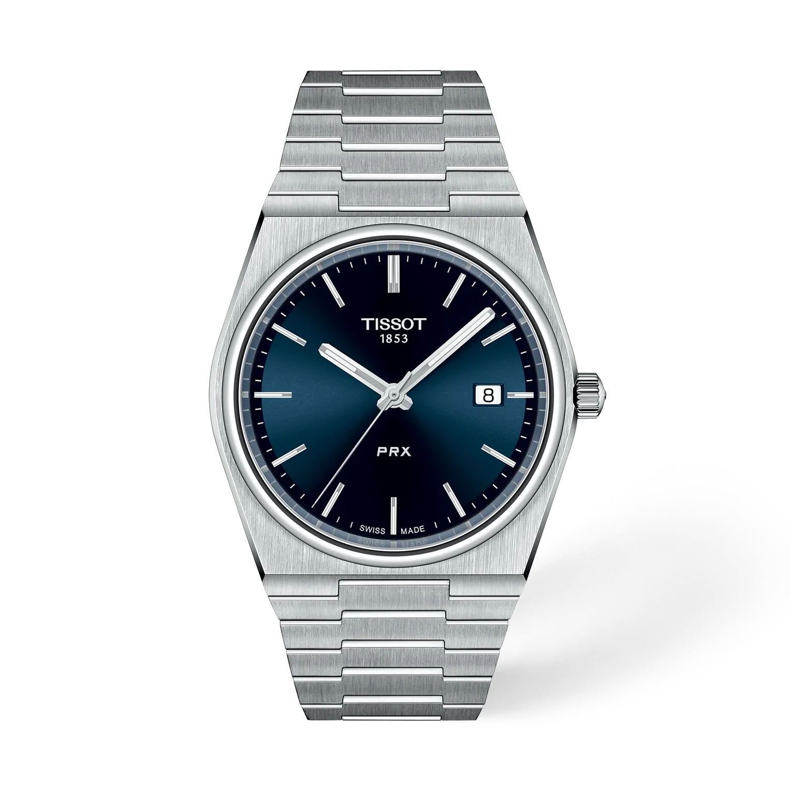

ChronoID est un site dédié à l’univers de l’horlogerie. Découvrez de nombreuses montres et marques, explorez notre catalogue et retrouvez facilement le modèle qui vous correspond grâce à la recherche intégrée.

Le site en un coup d’œil
Liste de montres
Toutes les montres classées par marque. Cliquez sur le logo d’une marque pour afficher ses modèles, avec leur prix, leur taille et leur mouvement.
Liste de souhaits
Gardez de côté les montres qui vous plaisent grâce au cœur de chaque fiche. Elles restent enregistrées dans votre navigateur.
Chercheur de montres
Bientôt : retrouvez un modèle selon son prix, sa taille ou son mouvement.